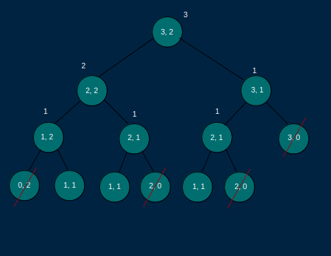

Say that you are a traveler on a 2D grid. You begin in the top-left corner and your goal is to travel to the bottom-right corner. You may only move down or right.
In how many ways can you travel to the goal on a grid with dimensions m * n?
Write a funtion `gridTraveler(m, n)` that calculates this.
Again the best way to see this problem is to draw it out

const gridTraveler = function (m, n, memo = {}) {
let key = m + "," + n;
if (key in memo) return memo[key];
if (m === 1 && n === 1) return 1;
if (m === 0 || n === 0) return 0;
memo[key] = gridTraveler(m - 1, n, memo) + gridTraveler(m, n - 1, memo);
return memo[key];
};
console.log(gridTraveler(3, 3)); // 6
console.log(gridTraveler(30, 30)); // 30067266499541040